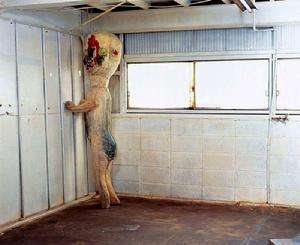
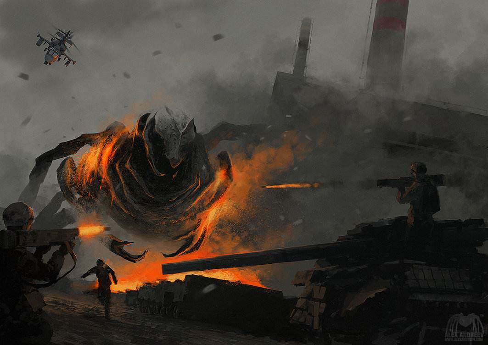
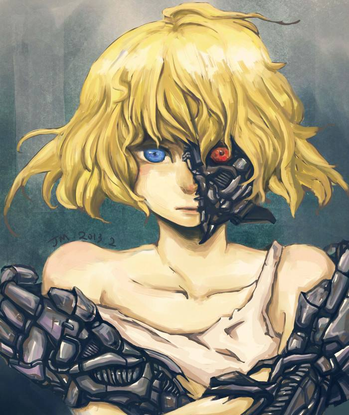
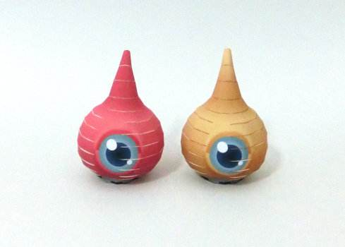

SCP-173-雕像(Keter)
最初之作是《SCP基金会》系列同人接力小说虚构的超自然"生物(未确定)"，外形为混凝土构成的人形雕像，会排泄，能在没有生物体注视的瞬间(包括眨眼，闭一只眼也不行，其可以感知是否有人注视)进行极快移动，有扭断生物(人类)脖子的嗜好。
特殊收容措施:SCP-173应在任何时候保存在一个上锁的包容区域内。如有人员必须进入此区域，进入人数必须不少于三人，并且进入后必须锁上入口的门。在工作完成重新开启入口之前，至少两名工作人员必须随时与SCP-173保持眼神接触。
描述:SCP-173於1993年移动到第19区，起源一直未知。它由混凝土和钢筋建造，并含有Krylon牌喷漆之痕迹。SCP-173是可动的,并且带有非常强的敌意，不过在直接视线中是不能移动的。与SCP-173之间的视线绝不能在任何时间被中断，容器内的人员必须在眨眼前给予指示。据报告，对象会折断头骨与颈部相连之处，或绞杀容器内之人员.在攻击事件中，人员需遵守第4级危险对象遏制程序。人员报告指出无人的容器内会传出刮石声。此为正常现象，若有任何行为之改变，应当报告值班中的HMCL监督员处理。在地板上的红棕色物质为粪便和血液组成，这些物质的起源亦是未知之数。容器内须每两周清洁一次。 ⟶

SCP-682-不灭孽蜥(Keter)
SCP-682体型巨大，类似大型的爬虫生物，不知其源头。它表现出极高的智慧，SCP-682表达它憎恶所有生命。有极高的力量，速度和反应速度，与它的体型完全不相符。通过进食和蜕皮，SCP-682能够很快的使体型增大或者减小。SCP-682可以从任何吃下的东西中获取能量，无论是有机物还是无机物。看起来SCP-682的鼻孔中有过滤腮，能够过滤任何液体中的无用物质，使它在强酸中仍然能够保持恢复能力。SCP-682的复能力和适应能力令人难以置信，在身体87%被摧毁和腐烂的情况下它仍然可以移动和交流。
特殊收容措施:任何情况下必须尽可能快的摧毁SCP-682。目前，SCP小组没有能力摧毁SCP-682，只能对它造成巨大的物理伤害。SCP-682需要被保管在5m x 5m x 5m的容器中，用25.4cm厚的抗强酸钢板内衬在容器壁上。用盐酸填满容器，直到SCP-682完全沉没且无力反抗。如果SCP-682试图移动,说话,或者破坏保管措施,必须快速做出反应并且全力应对可能的情况。为了避免激怒SCP-682，禁止员工于其交谈。任何未经许可的交流，会被强制制止。由于SCP-682经常试图破坏保管措施，保管它成为一件十分困难的事情，它对Foundation Exposure造成了非常大的威胁，SCP-682被保管在[抹去]。基金会用大量资源来确保保存地50公里内没有人类居住。
对SCP-682的起源之说最早可追溯于圣经新约时代。普罗旺斯地区的传说中讲道，曾有一艘小船，奇迹般地受到指引，它穿越了风暴，在隆河入海口附近靠了岸，就在今天的圣玛丽德拉梅尔的村庄与教堂所坐落的地方。船上有耶稣的爱徒们：复活者拉撒路、他的姐妹玛尔达、抹大拉的玛丽亚以及其他一些乘客，还有耶稣的信友。主升天之后，法利赛人想要谋害他们，就把他们赶上了这艘无帆无桨的船。逃生上岸之后，这些圣徒们分散到各地向普罗旺斯居民传播福音；圣女玛尔达的路途沿隆河而上，一路上她讲述生命的道义，显现了许多神迹。当时，阿维尼翁下游沿河两岸的居民深受一只怪兽所带来的恐慌的影响，它破坏农田，吞吃人畜。这是一条有着长尾的龙，狮子般的血盆大口，背上覆盖的厚厚鳞甲使之刀枪不入。人们称之为塔拉斯克（该词可能源于希腊语tarasso，意为恐惧），并认为它是来自隆河之底或地狱深渊的初始之物。惊恐万分的当地人不敢接近塔拉斯克的巢穴，甚至对它祭以迷信崇拜，也正是在这时，他们耳闻了圣女玛尔达一路上施行神迹的消息。于是，他们当即向圣女求助。圣女答应解救他们，她走向怪龙，以耶稣基督之名命令龙听从于她，并解下自己的腰带，拴在突然间变得温顺的恶龙塔拉斯克脖子上，牵着它走进了最近的村落，仿佛牵的是条温顺的家犬。为了纪念这个解救人们的奇迹，这个小村里从此改名为塔拉斯孔，人们为此创立了一个节日，其具体仪式在十世纪为国王勒内所认可，一直流传至今。塔拉斯克成了塔拉斯孔的标志：它的形象被镌刻于城市的纹章，市政厅正廊前有它的雕像，印章和过去的货币上也雕着塔拉斯克。 ⟶

SCP-191-机械女孩(Safe)
SCP-191的身体大部分被机械替换，脸部左半的80%部分的皮肉和头骨都被移除，眼睛和耳朵被复杂的接收系统所替代，右前臂上植入了一个输入输出装置，替换掉了桡骨和尺骨的位置，大脑内植入了一个24核的处理器阵列，负责将一切人工组件的输入进行“翻译”，还有至少15种其它的目的未知的替换。
SCP-191目前被安置在17号站点的一间6米x6米的房间内。迄今为止SCP-191还从未对家具或娱乐提出过任何要求。SCP-191的着装为宽松的纯棉制无袖服装。新的衣物每天提供一次，穿过的衣物根据标准程序进行消毒处理。沐浴每天晚上进行一次，使用掺有小苏打的水的浴缸。喂食（使用溶有维生素、矿物质、抗生素和轻度麻醉剂的生理盐水）每天进行两次，从脖颈后方的金属管进行注射。SCP-191具备一定程度上的自理能力，包括排出废料和给体内电池充电等等。能量消耗的情况需要随时记录，并且任何异常的电力消耗情况都需要向负责监督的官员汇报。对受伤情况的每日检查在沐浴后进行。
SCP-191具备一定程度上的自理能力，包括排出废料和给体内电池充电等等。能量消耗的情况需要随时记录，并且任何异常的电力消耗情况都需要向负责监督的官员汇报。对受伤情况的每日检查在沐浴后进行。当SCP-191需要医疗护理时，在进行护理前需要参见191-Alpha文档（特殊医疗需求）和191-Alpha附加文档（对非有机部件的维修）。任何人和SCP-191接触时，室内都需要有最少两名武装警卫在场，尽管为了隐私起见可以使用半透明屏风。标准的针对电脑反制措施是无效的，因为SCP-191的部件都经过抗电磁脉冲的强化处理。描述：SCP-191是一名人类女童，估计█岁左右。推测其为█████ █████████博士多次手术实验的实验品。 ⟶

SCP-131-眼豆（Safe）
SCP-131-A和SCP-131-B是在19【屏蔽资料】年，在【屏蔽资料】外的一个玉米田被发现的，她们迅速地经由【资料被删除】被运到Site-19，并马上被降级为安全级别，当确认她们的消息没有外泄到任何敌对国外势力时，她们得到在Site的自由管理。
描述：SCP-131-A和SCP-131-B（保安人员给她们取了个亲切的绰号“眼豆”）是对双胞胎，大概高30cm，在她们身体的中间有一只独立的蓝眼，SCP-131-A是火橙色的，而SCP-131-B是深黄色。这生物能够移动得令人惊奇地快，几乎能够在一秒内移动60米。然而，这俩家伙总是刹不住车，这会导致一些壮观的情景，如果太兴奋，灾难就会降临到这些生物头上…这生物也展示了它们能够攀爬陡峭平面的能力，并且它们已经不止一次在通风口迷路了。这些生物看上去拥有普通家猫的智商，并且拥有无法满足的好奇心。她们将大部分时间花在普通地在设施游荡中，并且观察工作中的SCP保安人员，还经常偷窥其它安全级别的SCP物体。这些生物看上去可以通过某种无法测量的高频声互相交流。观察人员从未看见过她们眨眼，即使是将她们放在实验室被用录像观察18小时以上。这些生物看上去很够很好地回应各种情绪，她们会很快地接近情绪的发出者并表达自己的情绪，她们接近的方式对一只幼犬和一个人是完全一样的。只要接触过，她们会跟随到底，即使是正常级限制区域。虽然好奇心旺盛，但是她们仍然能感知到附近的危险，而且，如果她们跟随的对象开始接近SCP-131们认为是危险的东西（比如Euclid和Keter级别的物体），她们会在对象脚旁不断蠕动（或者会适度地更激动）并用恐慌的音调发出咿呀声，就像警告她们一样。因为Site-19员工在处理Euclid或Keter级别的物体时经常会遇到危险，所以建议工作人员尽量避免被SCP-131们跟随，而且在一些细微的操作或实验期间她们（SCP-131）会心烦意乱，有可能给她们自身带来危险。如果被她们所跟随的人无视她们足够长的时间，她们经常会失去兴趣并回到正常的活动中去。
SCP-131-A以及SCP-131-B不需要特殊的安全遏制程序，她们可以自由在Site19活动如此之久就像她们从未打算过进入任何禁区或者离开设施一样。对物体的非正式交流是被允许的，但建议此类交流应该最低限度地避免生物对有关人员产生依恋。任何时间都将保持给此物体打上每小时一次的标签，但仍然不能解释这些时候她们的存在构成了一个一级封锁状态的原因。任何对此物体有虐待或辱骂的报告将会被严重处罚。 ⟶
SCP-999-痒痒怪(Safe)
SCP-999是一个巨大，无规则形态，黏胶状的橘黄色半透明粘稠物体。她的重量是54千克。其密度相当于花生酱。目标的形态大小会经常变化， 但大多数情况下和一个大豆袋椅相近。SCP-999是由一种类似油质，目前科学界未知的物质所组成的。除了橘黄色物体外面包裹的一层半透明薄膜外没有其他的组织。
特殊收容措施:SCP-999 只能在容器中自由行走.目标任何时候不得离开容器或者接触设施的地面.容器内须保持清洁并且每天两次给目标进食。所有人员在没有其他任务或者休息的情况下都可以进入SCP-999的容器内。在目标无聊的时候应该与她玩耍，并且须用冷静，不含威胁的口气与她进行对话。
目标拥有与狗相似的顽皮的性情。当接近目标时，SCP-999会表现得异常地兴高采烈，蠕动到最近的人类身边并跳到他们身上。然后使用两只触手拥抱住他们，同时用第三只手蹭他们的脸，并且发出尖锐的咯咯笑声和咕咕声。根据接触对象的不同，SCP-999的体表会散发令人愉悦的气味。记录下来的气味有巧克力味，洗衣液味，培根味，玫瑰味和Play-Doh™味。触碰SCP-999的表面会立即让人产生一种精神上的愉悦，并且在与SCP-999接触时这种感觉会增强，即使与目标分开后依然会持续很久。目标最喜欢的行为是互相挠痒痒的战斗，一般是将人从脖子以下全部包裹住不停地挠痒直到他们求饶为止（尽管她常常无视这个请求）。⟶